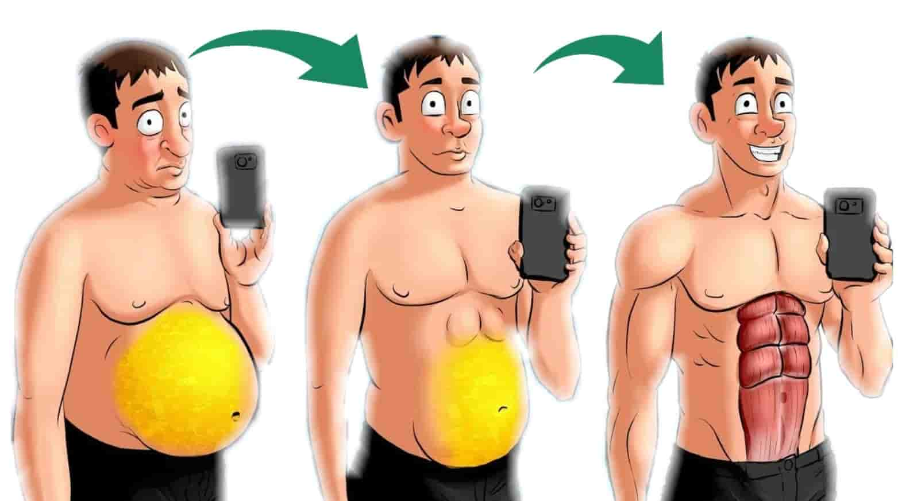
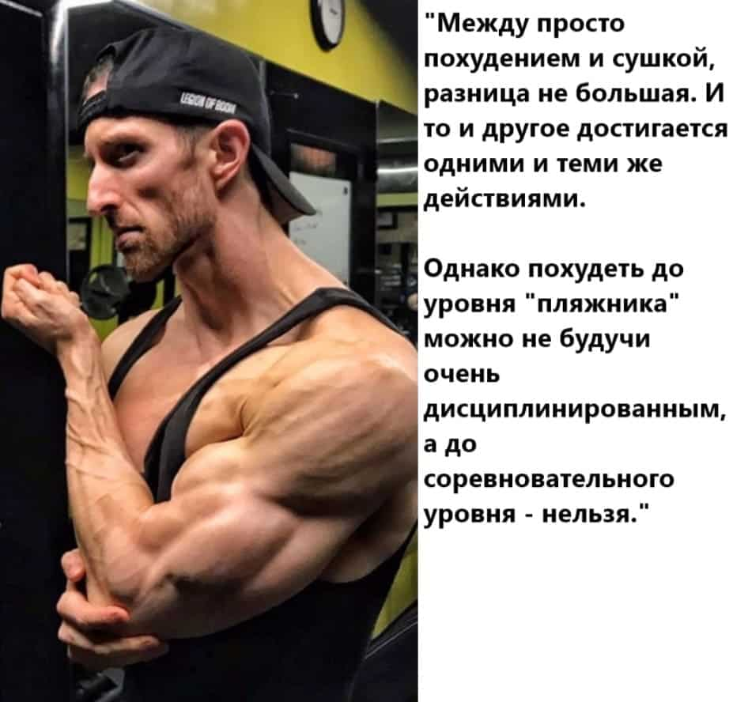
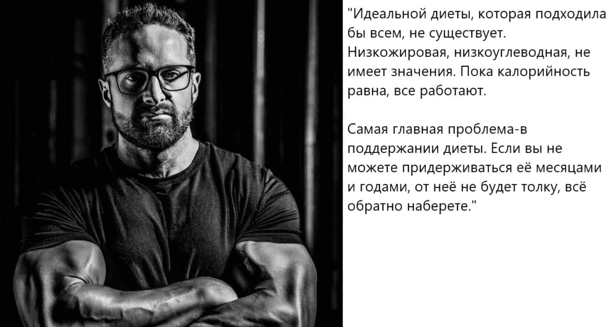

В этой статье я решил собрать воедино мнение различных экспертов, которые рассказали, как эффективнее всего худеть, рассмотрев все нюансы и подводные камни.
Для начала посмотрим, что говорит о похудении Эрик Хелмс, кандидат наук, опубликовавший большое число научных статей. Помимо этого, он сам в прекрасной форме.
Он сказал то, что хорошо понятно и изучено. С физиологической точки зрения похудение - исключительно вопрос дефицита энергии/калорий. То есть вам просто нужно потреблять меньше, чем вы тратите. Исключений не бывает и быть не может.
Однако Эрик подчеркивает, что при этом крайне важно терять не просто вес, а жир, сохраняя мышечную массу. Вот какие 5 нюансов для достижения этого даёт Эрик:
А вот что Эрик пишет по поводу фастфуда и "вредной пищи":
"Сильно переработанная пища как правило имеет более низкий термический эффект (значит на её переваривание тратится меньше калорий), но в итоге это будет просто означать, что вам нужно будет её поменьше есть, что опять возвращает нас к дефициту калорий."
"Но для лучшего насыщения и вашей способности придерживаться дефицита, лучше потреблять как можно меньше переработанных, и очень вкусных продуктов, и сосредотачиваться на цельных, "здоровых" продуктах. Но нужен баланс. Не нужно полностью исключать целые группы продуктов.
Большая часть питания должна состоять из фруктов, овощей и постного мяса/белковых продуктов, и нежирных источников углеводов (каши например), но иногда стоит позволять себе и конфеты или мороженое, или что вам хочется."
Воспитанники этого человека получили 125 про-карт в бодибилдинге и фитнесе, 87 званий мастеров спорта. Он воспитал 13 мировых чемпионов в натуральном бодибилдинге.
Этого человека зовут Клифф Вилсон. Тренер, автор, профессиональный атлет. Что он говорит по поводу похудения? В чем разница между просто похудением и достижением невероятного рельефа?

Клифф подчеркивает, что действительно "сухая" физическая форма - это не про здоровье. И далеко не каждый человек сможет достаточно долго поддерживать такую форму.
Но даже если речь о самой сухой форме на свете, всё равно всё сводится к фундаментальным правилам похудения, описанным в статье выше.
А что говорит Клифф по поводу самого стойкого жира? Который никак не хочет уходить, вот эта последняя складка на животе, например?
Девушку зовут Со Хи Ли, она защитила диссертацию по теме "Дихотомическое мышление по отношению к пище как посреднику между пищевым поведением и ИМТ".
Она расскажет о самых серьезных препятствиях, с которыми сталкиваются люди при похудении, и даст несколько советов, как проще худеть без психологических страданий.
Любые радикальные смены в питании и строгие диеты, вроде кето или периодического голодания - серьезные психологические испытания. Далеко не каждый их выдерживает. Потому что вырезаются целые группы продуктов (иногда очень любимые) и исключается привычный прием пищи (например завтрак).
А мотивации хватает ненадолго, и в итоге срыв и обратный набор веса. А все что нужно, на самом деле, это создать дефицит калорий. И чем более приемлемый способ для вас вы выберете для этого, тем вам будет проще худеть.
Создать привычки, которые позволят вам сократить потребление калорий. Например, убираем из нашего окружения насыщенную калориями пищу. Печенье, конфеты, мороженое, всё такое.
Всё это не должно быть в шкафу рядом с вами, или в миске на столе. В идеале такого не должно быть вообще у вас в квартире или на работе. Хотите конфет? Придется вставать, и идти в магазин за ними. Уже не хотите? В этом и суть.
Или, например, у вас на работе есть миска с конфетами. Она на расстоянии вытянутой руки от вашего рабочего места. Просто отодвиньте её подальше, чтобы вам пришлось вставать и идти к ней, чтобы перекусить.
Такие простые стратегии позволят вам снизить ваше потребление калорий.
Почему большая часть диет проваливается? Почему люди набирают вес обратно? Как бороться с этим? Рассказывает доктор науки о питании, доктор философии, атлет, Лейн Нортон.
Он поделился 5-ю стратегиями, которые позволят похудеть и поддерживать вес после похудения: